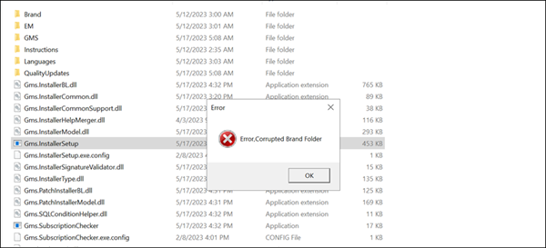
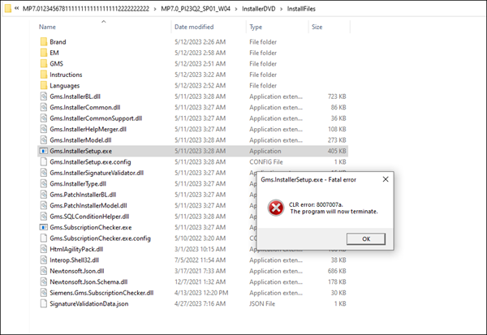
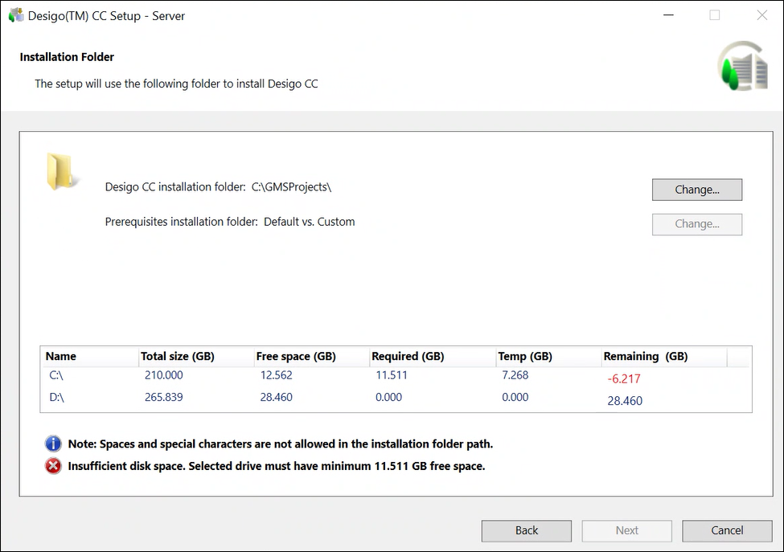
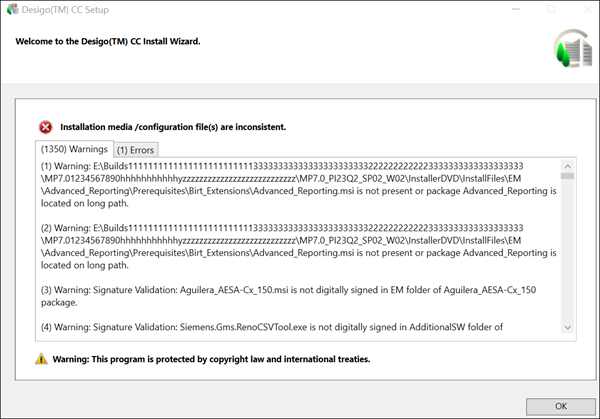
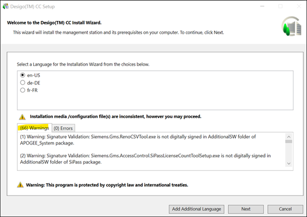

Long Folder Path fails Fresh Installation or Upgrade with an Error
Scenario:
You have placed the installation media at long folder path (source or destination) and fresh installation or upgrade fails with an error.
If Installation media is placed at long path, then it becomes difficult for the Installer to read configuration files from installation media as windows restricts file reading placed at long paths. Windows has restricted the path till 260 characters.
Cause:
During installation, Installer checks the source and destination folder paths (on which the installation media files will be deployed).
If the installation media is placed at any of the below paths:
- Long Source or Destination path: [InstallationDrive]\[Folder1] \[SubFolder2] \[SubFolder3] \InstallerDVD…
- Long folder name: [Installation Drive] \[Folder1] \[SubFolder1A2A3A4A5A6] \InstallerDVD…
The Installation might fail in any of the below cases:
Case 1:
When you run Gms.InstallerSetup.exe from installation media, installation fails with an error “Corrupted Brand Folder”.

Case 2:
When you run Gms.InstallerSetup.exe from installation media, installation is terminated with fatal error.

Case 3:
During minor upgrade, “insufficient disk space” error is displayed on installation wizard, you can [System Drive] \[ProgramData]\[Siemens]\GMS\InstallerFramework\GMS_Installer_Log for more details.

Case 4:
Some of the installation media files are not found as Installer is unable to read them as they are placed at long path and “File not present or file located on long path” warning message is displayed on installation wizard.

Case 5:
When digital signature validation is performed, the warning messages are significantly reduced because of Windows restriction for not reading files available on long path. The Windows is unable to find the installation media placed at long source or destination path.

Solution:
Before you perform fresh installation (custom, semi or silent) or upgrade Desigo CC, select shortest source or destination path for copying installation media.